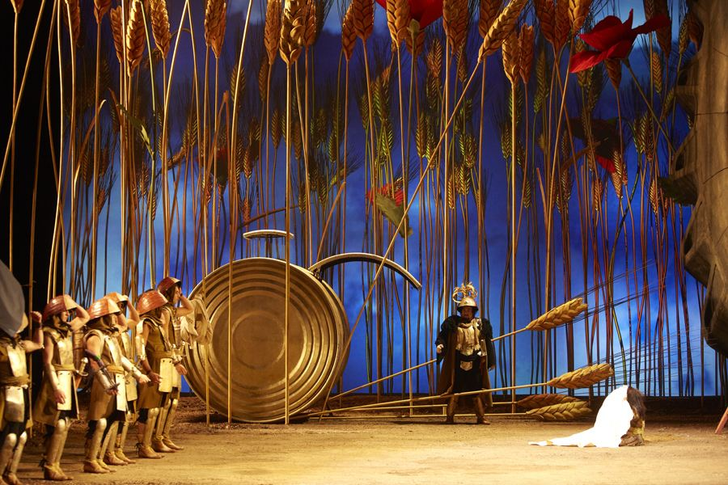
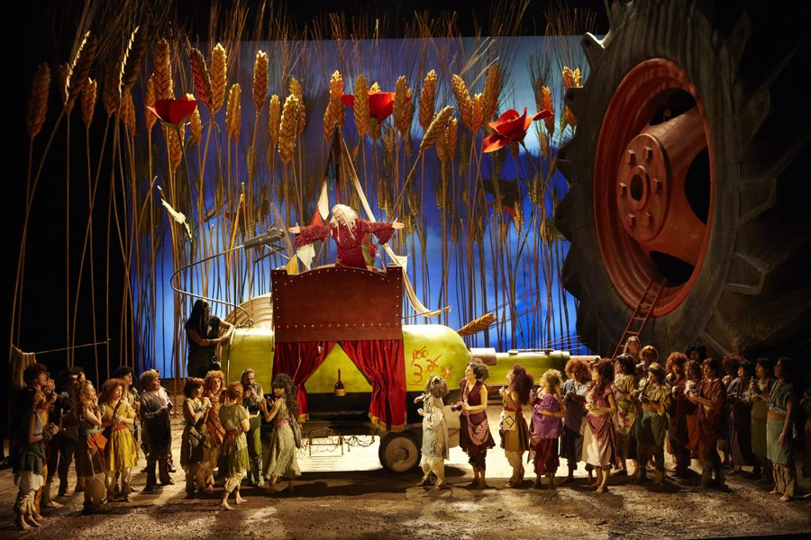
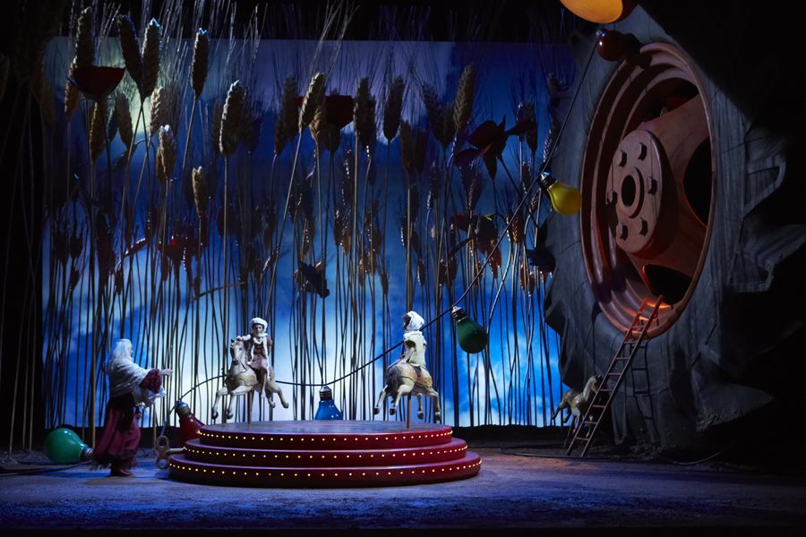
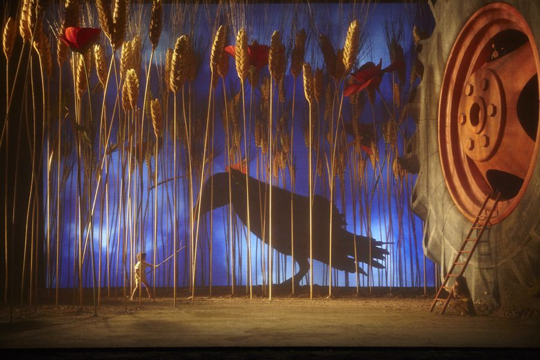
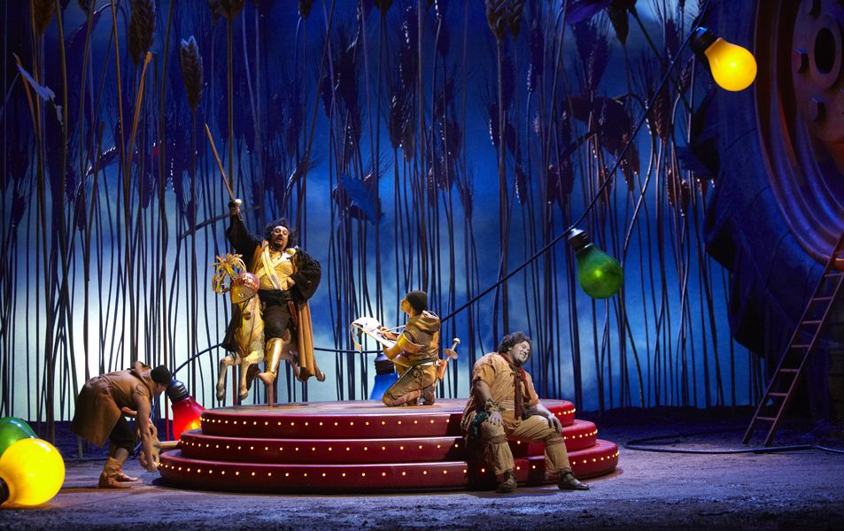
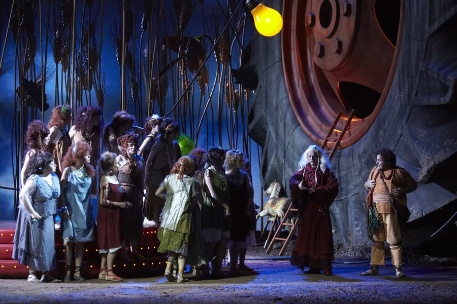
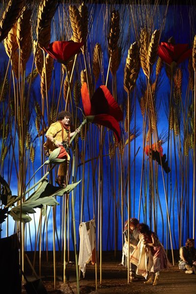
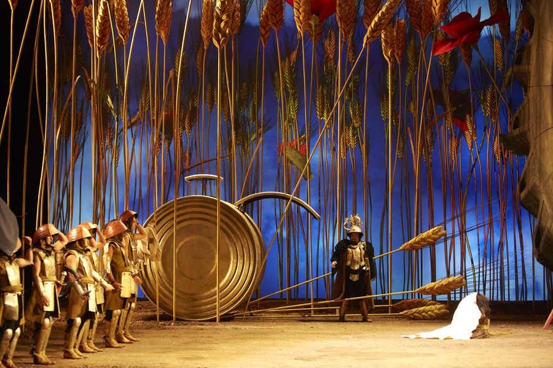
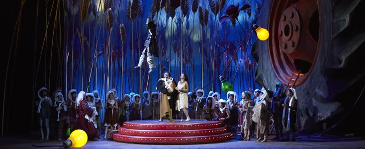
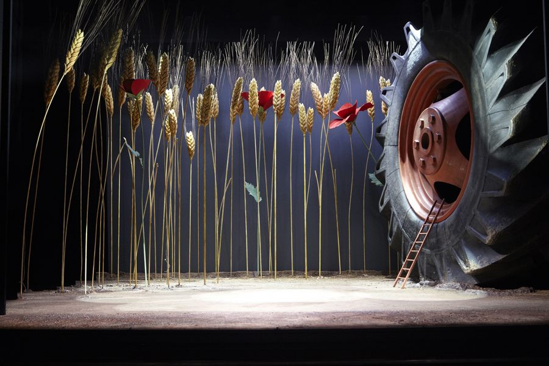

Per l’Opéra de Lausanne, Cristian Taraborrelli firma le scene e il video design de L’Elisir d’Amore di Donizetti con la regia e coreografia di Adriano Sinivia. Lo spettacolo, creato nel 2012 per l’inaugurazione della riapertura del teatro, ha attraversato l’Europa in una tournée decennale toccando Monte Carlo, Tours, Pamplona, Bordeaux e le Chorégies d’Orange.
For the Opéra de Lausanne, Cristian Taraborrelli designed the sets and video for Donizetti’s L’Elisir d’Amore, directed and choreographed by Adriano Sinivia. Created in 2012 for the theatre’s grand reopening, the production toured across Europe over a decade-long journey through Monte Carlo, Tours, Pamplona, Bordeaux and the Chorégies d’Orange.
Pour l’Opéra de Lausanne, Cristian Taraborrelli signe les décors et la vidéo de L’Elisir d’Amore de Donizetti, mis en scène et chorégraphié par Adriano Sinivia. Créé en 2012 pour la réouverture du théâtre, le spectacle a traversé l’Europe dans une tournée décennale passant par Monte Carlo, Tours, Pamplona, Bordeaux et les Chorégies d’Orange.
La Visione — Lillipuziani in un campo di grano
L’idea scenografica nasce da un’immagine poetica: i personaggi dell’Elisir sono lillipuziani che abitano un campo di grano, circondati da spighe giganti e papaveri rossi che svettano sopra le loro teste. Una ruota di trattore enorme domina la scena come un monumento rurale, mentre il carretto di Dulcamara è ricavato da una bottiglia di vino. I costumi, firmati da Enzo Iorio, giocano con il riciclo e l’invenzione: i soldati di Belcore indossano armature fatte di lattine, in un universo dove il quotidiano diventa fiaba.
Questo mondo a misura d’insetto trasforma la campagna donizettiana in un microcosmo fantastico, dove ogni dettaglio scenografico amplifica la dimensione comica e tenera dell’opera. La freschezza di questa visione ha conquistato pubblico e critica in tutta Europa per oltre dieci anni.
The scenic concept springs from a poetic image: the characters of the Elisir are Lilliputians inhabiting a wheat field, surrounded by giant stalks and red poppies towering above their heads. An enormous tractor wheel dominates the stage like a rural monument, while Dulcamara’s cart is fashioned from a wine bottle. Enzo Iorio’s costumes play with recycling and invention: Belcore’s soldiers wear armour made of tin cans, in a universe where the everyday becomes fairy tale.
This insect-scale world transforms Donizetti’s countryside into a fantastical microcosm, where every scenic detail amplifies the comic and tender dimensions of the opera. The freshness of this vision won over audiences and critics across Europe for more than a decade.
L’idée scénographique naît d’une image poétique : les personnages de l’Elisir sont des lilliputiens habitant un champ de blé, entourés d’épis géants et de coquelicots rouges qui s’élèvent au-dessus de leurs têtes. Une énorme roue de tracteur domine la scène comme un monument rural, tandis que la carriole de Dulcamara est façonnée à partir d’une bouteille de vin. Les costumes d’Enzo Iorio jouent avec le recyclage et l’invention : les soldats de Belcore portent des armures en boîtes de conserve, dans un univers où le quotidien devient conte de fées.
Ce monde à l’échelle d’un insecte transforme la campagne donizettienne en un microcosme fantastique, où chaque détail scénographique amplifie les dimensions comique et tendre de l’œuvre. La fraîcheur de cette vision a conquis public et critique à travers l’Europe pendant plus de dix ans.
Tournée Europea — 2012–2022
Galleria










Maquette

Rassegna Stampa
“L’occhio è costantemente sedotto da questo assemblaggio di colori vibranti.”
Richard Martet — Opéra Magazine, 2012
“Dopo dieci anni, l’allestimento non è invecchiato di un giorno.”
Matthieu Chenal, 2022
“Un Elisir al tempo stesso giovane e originale.”
Cyril Mazin, 2014
Curiosità
Dieci anni in tournée. Poche produzioni d’opera possono vantare una vita così lunga: dal debutto a Lausanne nel 2012 fino alle Chorégies d’Orange nel 2022, questo Elisir ha attraversato sei teatri in cinque paesi europei, segno di un allestimento che ha saputo conquistare pubblici diversi con la sua freschezza inventiva.
Inaugurazione della riapertura. L’Opéra de Lausanne scelse proprio questo Elisir per celebrare la riapertura del teatro dopo i lavori di ristrutturazione, il 5 ottobre 2012. Un battesimo che ha portato fortuna: lo spettacolo non ha più smesso di viaggiare.
Chorégies d’Orange. Nel 2022 lo spettacolo approda al Teatro Antico di Orange, il più grande teatro romano ancora in attività, con i suoi 9.000 posti. Un’arena all’aperto che ha accolto i lillipuziani di Taraborrelli e Sinivia davanti al muro scenico più celebre del mondo.
Scenografia riciclata. I costumi di Enzo Iorio sono vere sculture di oggetti quotidiani: le armature dei soldati di Belcore sono costruite con lattine di conserva, il carretto del Dottor Dulcamara è ricavato da una bottiglia di vino. Un omaggio al teatro povero che diventa pura poesia visiva.
Ten years on tour. Few opera productions can boast such longevity: from its debut in Lausanne in 2012 to the Chorégies d’Orange in 2022, this Elisir travelled through six theatres across five European countries — a testament to a staging that won over diverse audiences with its inventive freshness.
Grand reopening. The Opéra de Lausanne chose this very Elisir to celebrate its reopening after renovation on October 5, 2012. A christening that brought good fortune: the production never stopped travelling.
Chorégies d’Orange. In 2022 the production reached the Théâtre Antique d’Orange, the largest Roman theatre still in use, seating 9,000 spectators. An open-air arena that welcomed Taraborrelli and Sinivia’s Lilliputians before the most famous stage wall in the world.
Recycled scenography. Enzo Iorio’s costumes are true sculptures of everyday objects: Belcore’s soldiers wear armour built from tin cans, Doctor Dulcamara’s cart is fashioned from a wine bottle. A tribute to teatro povero that becomes pure visual poetry.
Dix ans en tournée. Rares sont les productions d’opéra pouvant se vanter d’une telle longévité : de sa création à Lausanne en 2012 aux Chorégies d’Orange en 2022, cet Elisir a traversé six théâtres dans cinq pays européens — témoignage d’une mise en scène qui a su conquérir des publics divers par sa fraîcheur inventive.
Réouverture inaugurale. L’Opéra de Lausanne a choisi cet Elisir pour célébrer sa réouverture après rénovation le 5 octobre 2012. Un baptême qui a porté chance : le spectacle n’a plus cessé de voyager.
Chorégies d’Orange. En 2022, le spectacle atteint le Théâtre Antique d’Orange, le plus grand théâtre romain encore en activité, avec ses 9 000 places. Une arène en plein air qui a accueilli les lilliputiens de Taraborrelli et Sinivia devant le mur de scène le plus célèbre au monde.
Scénographie recyclée. Les costumes d’Enzo Iorio sont de véritables sculptures d’objets du quotidien : les armures des soldats de Belcore sont construites en boîtes de conserve, la carriole du Docteur Dulcamara est façonnée à partir d’une bouteille de vin. Un hommage au teatro povero qui devient pure poésie visuelle.
I Collaboratori
Regia e Coreografia
Adriano Sinivia
Regista e coreografo argentino-italiano, nato a Buenos Aires, attivo da decenni nei principali teatri d'opera europei (Lausanne, Bordeaux, Toulouse, Marsiglia, Tours, Saint-Étienne) e americani. Ha costruito una cifra riconoscibile basata su tre elementi: fisicità del cantante-attore, comicità di scuola italiana (Fellini, De Filippo, Strehler) e immaginazione visiva favolistica. Ama lavorare con ambientazioni metaforiche — un campo di grano, una fattoria, un circo — e spesso firma anche le coreografie. La collaborazione con Cristian Taraborrelli si protrae per oltre un decennio.
Direttore d'orchestra
Jesús López Cobos (1940–2018)
Maestro spagnolo, una delle bacchette di riferimento del repertorio belcantistico e sinfonico tardo-romantico nella seconda metà del Novecento. Nato a Toro (Zamora), si forma a Madrid, Roma e Vienna sotto la guida di Hans Swarowsky. Direttore musicale del Deutsche Oper di Berlino (1981–90), del Cincinnati Symphony Orchestra (1986–2001), del Teatro Real di Madrid (2003–10), capo principale ospite della Berliner Philharmoniker, della London Philharmonic e di numerosi enti europei e americani. Per L'Elisir di Lausanne 2012 dirige una compagine attenta alla leggerezza ritmica e alla chiarezza orchestrale donizettiana, costruendo una cornice musicale rigorosa attorno alla visione fiabesca di Sinivia e Taraborrelli.
Costumi
Enzo Iorio
Costumista italiano formatosi nella sartoria d'opera, collaboratore abituale di Sinivia e di numerose produzioni del circuito francese e svizzero. Per L'Elisir firma una galleria di costumi dichiaratamente poveristi: armature di lattine per i soldati di Belcore, tessuti grezzi per i contadini, pizzi e merletti riadattati per Adina, redingote e cilindro per Dulcamara. La sua tavolozza dialoga con la scenografia oversize di Taraborrelli, costruendo un'unità visiva fra costume e oggetto.
Disegno luci
Fabrice Kebour
Lighting designer francese di rilievo internazionale, una delle firme più richieste del teatro lirico contemporaneo. Collabora con Cristian Taraborrelli su numerosi progetti maggiori — Turandot alla Scala, Don Carlos al Mariinsky, La Belle Hélène al Châtelet — portando una scrittura luministica che sa dialogare con la videoscenografia digitale e con le grandi macchine lignee della tradizione. Per L'Elisir costruisce una luce diurna, calda, mediterranea: il sole del campo di grano che attraversa le spighe giganti, il tramonto sul carretto di Dulcamara, la notte stellata del finale.
Direction & Choreography
Adriano Sinivia
Argentine-Italian director and choreographer, born in Buenos Aires, active for decades on Europe's leading opera stages (Lausanne, Bordeaux, Toulouse, Marseille, Tours, Saint-Étienne) and in the Americas. He has built a recognisable signature on three elements: singer-actor physicality, Italian-school comedy (Fellini, De Filippo, Strehler) and fairy-tale visual imagination. He favours metaphorical settings — a wheat field, a farm, a circus — and often signs the choreography himself. His collaboration with Cristian Taraborrelli has continued for over a decade.
Conductor
Jesús López Cobos (1940–2018)
Spanish maestro, one of the reference batons of bel canto and late-Romantic symphonic repertoire in the second half of the twentieth century. Born in Toro (Zamora), he trained in Madrid, Rome and Vienna under Hans Swarowsky. General Music Director of Berlin's Deutsche Oper (1981–90), Cincinnati Symphony Orchestra (1986–2001), Madrid's Teatro Real (2003–10), principal guest conductor of the Berliner Philharmoniker, London Philharmonic and many other European and American institutions. For Lausanne 2012's L'Elisir he leads with attention to rhythmic lightness and Donizettian orchestral clarity, building a rigorous musical frame around the fairy-tale vision of Sinivia and Taraborrelli.
Costumes
Enzo Iorio
Italian costume designer trained in opera tailoring, regular collaborator of Sinivia and of many productions in the French and Swiss circuit. For L'Elisir he signs a frankly arte povera gallery: tin-can armours for Belcore's soldiers, raw fabrics for the peasants, repurposed lace for Adina, frock coat and top hat for Dulcamara. His palette dialogues with Taraborrelli's oversize set, building a visual unity between costume and object.
Lighting Design
Fabrice Kebour
French lighting designer of international standing, one of the most requested signatures in contemporary opera. He collaborates with Cristian Taraborrelli on several major projects — Turandot at La Scala, Don Carlos at the Mariinsky, La Belle Hélène at the Châtelet — bringing a lighting writing that knows how to dialogue with both digital video-scenography and the great wooden machines of tradition. For L'Elisir he builds a daytime, warm, Mediterranean light: the sun of the wheat field crossing the giant stalks, the sunset on Dulcamara's cart, the starry night of the finale.
Mise en scène & Chorégraphie
Adriano Sinivia
Metteur en scène et chorégraphe argentino-italien, né à Buenos Aires, actif depuis des décennies dans les principaux opéras européens (Lausanne, Bordeaux, Toulouse, Marseille, Tours, Saint-Étienne) et américains. Il a construit une signature reconnaissable sur trois éléments : physicalité du chanteur-acteur, comique d'école italienne (Fellini, De Filippo, Strehler) et imagination visuelle féerique. Il privilégie les scénographies métaphoriques — un champ de blé, une ferme, un cirque — et signe souvent lui-même les chorégraphies. Sa collaboration avec Cristian Taraborrelli se prolonge depuis plus d'une décennie.
Chef d'orchestre
Jesús López Cobos (1940–2018)
Maestro espagnol, l'une des baguettes de référence du répertoire belcantiste et symphonique post-romantique de la seconde moitié du XXe siècle. Né à Toro (Zamora), il se forme à Madrid, Rome et Vienne sous la direction de Hans Swarowsky. Directeur musical du Deutsche Oper de Berlin (1981–90), du Cincinnati Symphony Orchestra (1986–2001), du Teatro Real de Madrid (2003–10), chef invité principal du Berliner Philharmoniker, du London Philharmonic et de nombreuses autres formations européennes et américaines. Pour L'Elisir à Lausanne en 2012, il conduit avec une attention à la légèreté rythmique et à la clarté orchestrale donizettienne, construisant un cadre musical rigoureux autour de la vision féerique de Sinivia et Taraborrelli.
Costumes
Enzo Iorio
Costumier italien formé dans la couture d'opéra, collaborateur habituel de Sinivia et de nombreuses productions du circuit français et suisse. Pour L'Elisir il signe une galerie franchement arte povera : armures en boîtes de conserve pour les soldats de Belcore, tissus bruts pour les paysans, dentelles réadaptées pour Adina, redingote et haut-de-forme pour Dulcamara. Sa palette dialogue avec la scénographie oversize de Taraborrelli, construisant une unité visuelle entre costume et objet.
Création lumière
Fabrice Kebour
Créateur lumière français de stature internationale, l'une des signatures les plus demandées du théâtre lyrique contemporain. Il collabore avec Cristian Taraborrelli sur de nombreux projets majeurs — Turandot à la Scala, Don Carlos au Mariinsky, La Belle Hélène au Châtelet — apportant une écriture lumineuse capable de dialoguer avec la vidéoscénographie numérique comme avec les grandes machines de bois de la tradition. Pour L'Elisir il construit une lumière diurne, chaude, méditerranéenne : le soleil du champ de blé qui traverse les épis géants, le coucher de soleil sur la carriole de Dulcamara, la nuit étoilée du final.
Team Creativo
Tags